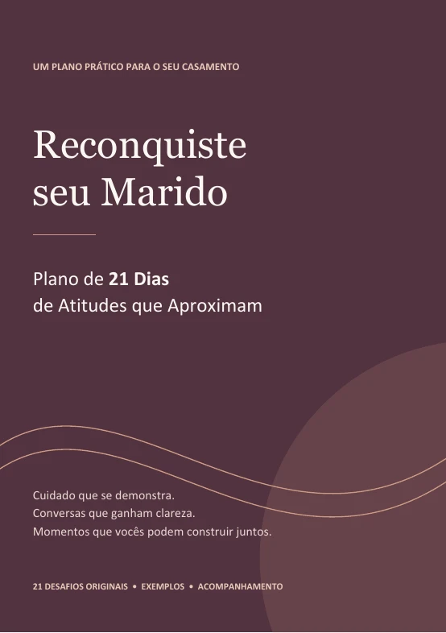

Abra espaço
para o cuidado.
Troque cobranças por pedidos claros. Demonstre admiração e volte a prestar atenção nos detalhes.
Um cuidado que tem endereçoSEU PLANO DE 21 DIAS
Resgate os gestos, as conversas e o carinho que aproximam vocês. Um plano de 21 dias para sair do “por onde eu começo?” e colocar o amor em atitude.
Quero começar minha reconquistaUma atitude por dia. Um novo espaço para vocês.
O próximo capítulo
começa com
um pequeno gesto.
Menos distância no dia a dia.
Mais momentos de verdade, a dois.

SAIBA EXATAMENTE O QUE FAZER
Uma sequência de desafios para trazer intenção ao que costuma ficar para depois: ouvir com presença, demonstrar admiração e encontrar tempo para vocês.
UM PLANO. TRÊS ETAPAS.
Troque cobranças por pedidos claros. Demonstre admiração e volte a prestar atenção nos detalhes.
Um cuidado que tem endereçoFaça um convite que caiba na rotina, escreva o que ficou faltando e separe um intervalo para vocês.
Um intervalo só de vocêsConversem sobre o que faz falta, escolham um combinado possível e decidam o próximo cuidado.
Um projeto que seja dos doisMENOS TEORIA. MAIS ATITUDE.
Em cada desafio, você encontra uma reflexão breve, passos práticos, um exemplo e perguntas para acompanhar a experiência.
Este é um dos exercícios do guia.
“Você nunca liga para mim.”
“Sinto falta de um tempo com você. Podemos tomar um café juntos hoje, sem celular?”
QUANDO O CUIDADO SAI DO PAPEL
Experiências publicadas com práticas de gratidão, encontros e conversas a dois.
Ao final, concordamos que isso tornou nosso relacionamento mais forte.
Agora conseguimos expressar nossa gratidão um ao outro, e fico impressionada com a felicidade que sentimos ao fazer isso.
Essa é uma pessoa que conhece meu coração agora, de um jeito que não conhecia antes.
Trechos traduzidos de relatos sobre as práticas identificadas em cada cartão.
UM OLHAR PARA A CIÊNCIA DOS RELACIONAMENTOS
O PRÓXIMO PASSO PODE SER SIMPLES
Você já sabe o que sente falta. Agora, tenha um plano para transformar essa vontade em atitudes ao longo de 21 dias.
Formato PDF · para ler no celular ou imprimir
Quero meu plano de 21 diasSeu primeiro gesto começa com uma decisão.
ANTES DE COMEÇAR
Um guia digital em PDF de 50 páginas, com 21 desafios originais. Cada dia traz reflexão, passos práticos, exemplo, adaptações e espaço para acompanhar a experiência.
Você pode começar pelos seus próprios gestos: ouvir, fazer um pedido claro e demonstrar cuidado. As atividades a dois entram como convites, respeitando o espaço e a participação de cada um.
A proposta é usar atitudes que caibam na vida real: uma pergunta atenta, um reconhecimento sincero, um café juntos ou uma conversa com mais presença.
Para organizar sua prática em três etapas, com uma atitude por dia e espaço para observar o que faz sentido continuar no relacionamento.
Sim. O material é um PDF que pode ser aberto no celular, tablet ou computador. Você também pode imprimir as páginas e preencher suas reflexões à mão.